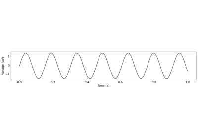

neurodsp.sim.sim_oscillation¶
- neurodsp.sim.sim_oscillation(n_seconds, fs, freq, cycle='sine', phase=0, **cycle_params)[source]¶
Simulate an oscillation.
- Parameters:
- n_secondsfloat
Simulation time, in seconds.
- fsfloat
Signal sampling rate, in Hz.
- freqfloat
Oscillation frequency.
- cycle{‘sine’, ‘asine’, ‘sawtooth’, ‘gaussian’, ‘exp’, ‘2exp’, ‘exp_cos’, ‘asym_harmonic’} or callable
What type of oscillation cycle to simulate. See sim_cycle for details on cycle types and parameters.
- phasefloat or {‘min’, ‘max’}, optional, default: 0
If non-zero, applies a phase shift to the oscillation by rotating the cycle. If a float, the shift is defined as a relative proportion of cycle, between [0, 1]. If ‘min’ or ‘max’, the cycle is shifted to start at it’s minima or maxima.
- **cycle_params
Parameters for the simulated oscillation cycle.
- Returns:
- sig1d array
Simulated oscillation.
Examples
Simulate a continuous sinusoidal oscillation at 5 Hz:
>>> sig = sim_oscillation(n_seconds=1, fs=500, freq=5)
Simulate an asymmetric oscillation at 15 Hz, with a phase shift:
>>> sig = sim_oscillation(n_seconds=1, fs=500, freq=15, ... cycle='asine', phase=0.5, rdsym=0.75)
Examples using neurodsp.sim.sim_oscillation¶


Simulating Periodic Signals